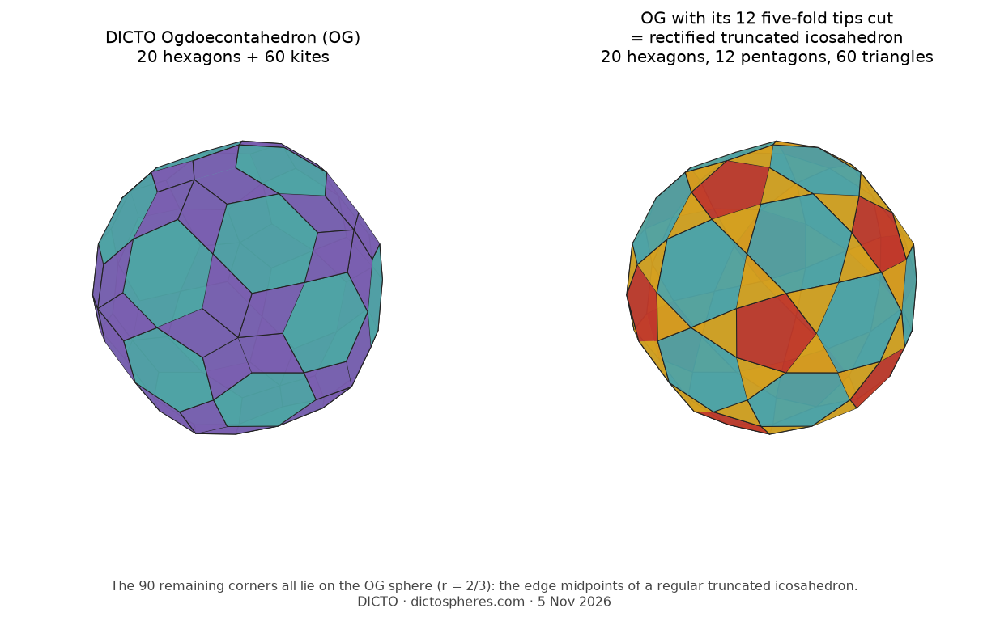
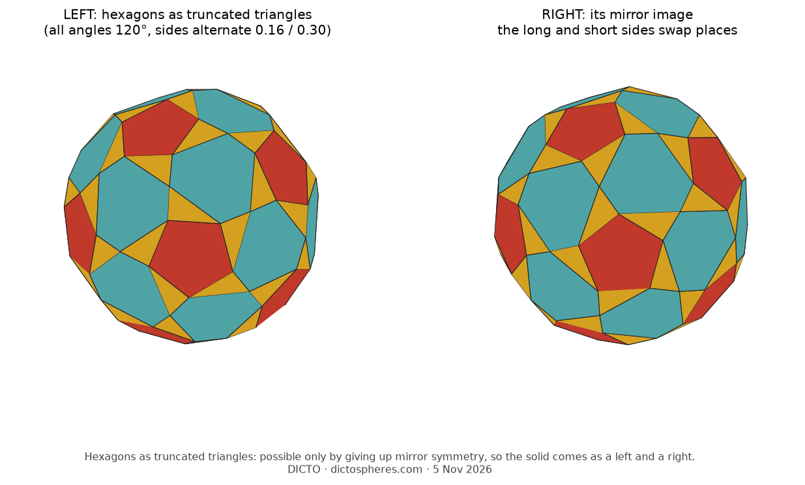

DICTO proposed setting pentagons in the middle of the five-kite stars that the 20 hexagons surround. It works cleanly. One flat cut at each of the 12 five-fold corners, through the five side corners of its kites, removes exactly the 12 corners that lie off the sphere and nothing else. Each star becomes a regular pentagon, each kite becomes an isosceles triangle (base 2/9, shared with a pentagon; sides 0.2379, shared with hexagons; angles 55.7°, 62.2°, 62.2°), the hexagons are untouched, and 98.35% of the volume stays (Figure 8).

What remains is the convex hull of the 90 sphere corners, and it is a known solid: the rectified truncated icosahedron, whose corners are the midpoints of the 90 edges of a regular truncated icosahedron. The ratio of its two edge lengths, 0.23788 / 0.22222 = 1.07047, is sin 60° / sin 54°, as it must be. So the Ogdoecontahedron's 90 sphere corners are the edge midpoints of a regular truncated icosahedron, the shape of the C60 molecule: they sit at its 90 bond centres. Measured directly, the largest distance between a corner of the cut solid and the nearest edge midpoint of the truncated icosahedron is below 10−10 (Figure 9). Solid C60 (fullerite) stacks its molecules face-centred cubic, the close packing of our other work; we note the link and do not pursue it here.

All edges equal. The same arrangement can also be made with all 180 edges equal and every face flat, keeping full icosahedral symmetry: regular pentagons, equilateral triangles, and equilateral hexagons whose angles alternate 124.72° and 115.28° (Figures 8 and 9; numerical solution, residual 10−6; its corners then lie on two spheres, radii in ratio 1.0058). Near-miss catalogues list this arrangement; we have not yet checked whether this exact solid is among them.
Hexagons as truncated triangles: a left and a right. DICTO proposed making the hexagons truncated triangles instead, with every angle 120° and sides alternating long and short. With the mirrors kept this is impossible, since a mirror through every hexagon forces its six sides equal. Giving up the mirrors and keeping only the 60 rotations, it works: starting from the solid on one sphere (regular hexagons), the solid twists through a one-parameter family in which all 20 hexagons are flat truncated triangles, the 12 pentagons stay regular, and the solid stays convex at least until the sides reach 0.114 and 0.343 (numerical, faces flat to 10−9). Each member comes as a left and a right, mirror images, depending on which three sides of each hexagon are the long ones (Figure 10). The triangles become scalene (a short hexagon side, a pentagon side, a long hexagon side), so truncated-triangle hexagons and equilateral triangles never occur together.

Space filling and packing. The Dehn invariant of both the Ogdoecontahedron and the cut solid is nonzero (float screen, calibrated on the cube and rhombic dodecahedron), so neither fills space alone. Their hexagon networks are unchanged, since the hexagons are; the body-centred cubic double network now fills about 76.15%. A lattice-packing search (299 local searches, verified over lattice coefficients up to 4) gives a best density of 0.776244 for the cut solid, against 0.789260 for the Ogdoecontahedron; each copy touches 12 neighbours, 10 on hexagons and 2 on triangles. Cutting the tips lowers the best density found.